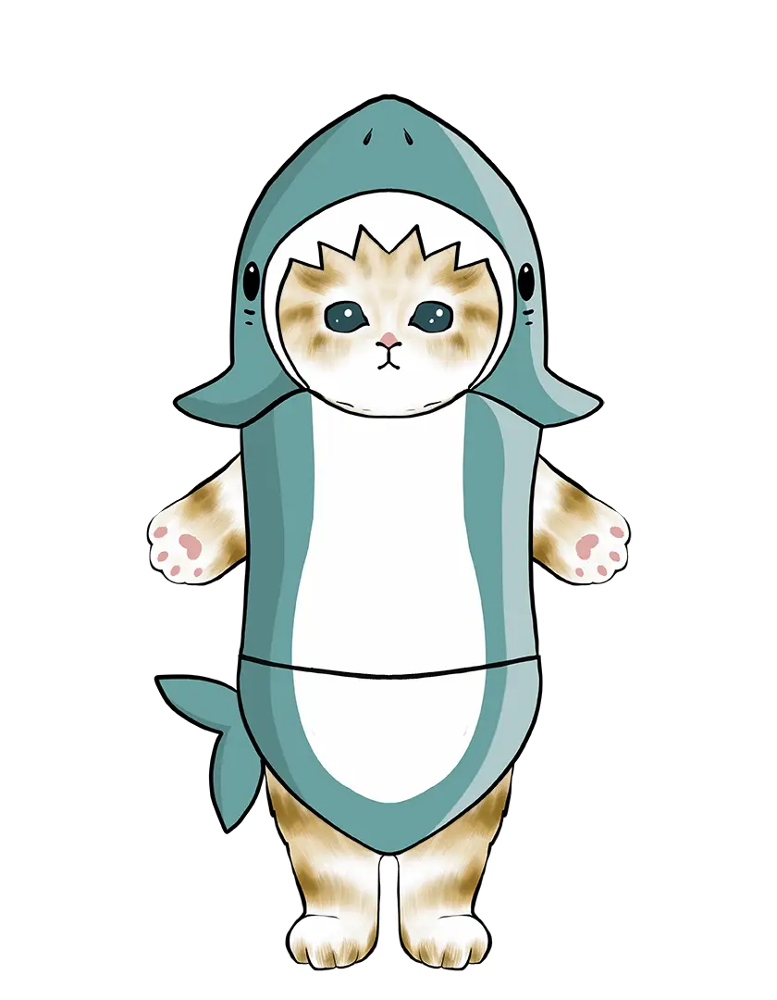

25
Почему запись в закрытый канал вызывает панику, а чтение из него - нет?
Всем привет! Разбираюсь с каналами. Почему при попытке отправить данные в закрытый канал (ch <- val) программа падает с panic: send on closed channel, а если просто читать из закрытого канала, то мы получаем нулевые значения и ok == false? Почему дизайнеры языка сделали такую асимметрию?